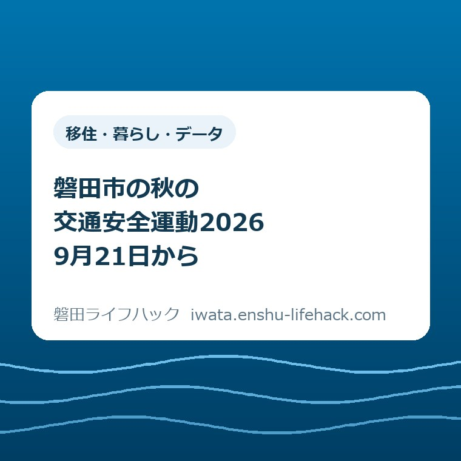

移住・暮らし・データ
磐田市の秋の交通安全運動2026｜9月21日から

この記事の要点
Q. 秋の交通安全運動はいつから？ 家族は何を確かめればいい？
A. 2026年の秋の全国交通安全運動は9月21日（月）〜30日（水）。磐田市の市内一斉街頭キャンペーンは9月18日の事前日程です。今日は送迎や買い物で通る交差点を一つ選び、見えにくい方向と安全に待てる位置を家族で確認することを提案します。市の年間重点と秋の運動の重点は分けて読み、最新情報は磐田市公式ページで確かめてください。
送迎と見守りは、もう家族の予定に入っている
磐田市の秋の交通安全運動が始まる前に、送迎や見守りを続けている方の負担を、まず数えておきたいと思います。子どもの帰宅時刻に仕事を合わせる。親の通院に付き添う。雨の日は車を出し、帰りが遅ければ迎えの場所を変える。交通安全は、家族にとって新しく始める行事だけではありません。
道路の形、通る時間、歩く速さによって、必要な確認は変わります。利用できる支援制度も個別条件で異なります。この記事は、磐田市全域の道を一律に安全と判断するものではありません。2026年9月20日に確認した市の資料を、普段の移動で話し合える言葉に置き換えます。
大石浩之（磐田市／不動産業）です。私は、交通安全の呼びかけを読む家族に、さらに大きな宿題を渡す書き方は避けたいと考えています。子どもと親を支える人の時間にも限りがあります。今日の提案は、いつもの交差点を一つ選ぶことです。家中の移動経路を全部点検する必要はありません。
2026年9月20日の日曜日にこの記事を読む方にとって、運動の開始は明日、9月21日です。開始日が過ぎてから読んでも、確認の対象は同じです。通学、習い事、買い物、通院のどれかで通る一か所を、家族が同じ場所として思い浮かべられるようにします。
9月21〜30日の運動と、9月18日の街頭日程は別
磐田市「交通安全活動」（2026年9月7日更新）では、令和8年度の秋の全国交通安全運動を9月21日（月）から30日（水）までの10日間と案内しています。市内一斉街頭キャンペーンの実施日は9月18日（金）です。全国運動の期間と、市の街頭日程を取り違えないようにします。
少し意外なのは、街頭キャンペーンが運動初日より前に置かれていることです。市掲載の「令和8年 秋の全国交通安全運動実施要綱」でも、9月18日は事前広報・街頭指導の日として示されています。9月18日という日付を見て、秋の運動がもう終わったと読む必要はありません。
ここで確認できるのは、公表された実施日程です。9月18日の各地点で実際に何人が参加し、何が行われたかという結果まで確認したわけではありません。この記事では「実施された」と現場を見たようには書かず、日程として紹介します。予定表と実施報告は分けて読むのが確実です。

市のページにある重点的な取組は、令和8年度の年間の枠組みです。子どもと高齢者の事故防止、自転車の事故防止とヘルメット着用率の向上、交差点の事故防止を掲げています。これらに加え、発生傾向に応じた対応と関係機関の情報共有も挙げています。最初の三つだけが市の取組の全部ではありません。
一方、秋の実施要綱は、歩行者の安全と反射材、夕暮れの点灯と飲酒運転・ながらスマホの防止、自転車等の交通ルール、交差点の事故防止を重点にしています。年間の取組と秋の重点は重なりますが、同じ一覧ではありません。「子どもと高齢者だけの運動」と狭く受け取らないことも必要です。
市の重点を、子ども・親・自転車の道に置き換える
子どもの送迎を考えるときは、目的地だけでなく、車から降りて歩く区間まで含めて道を見ます。ここからは市が指定した個別経路ではなく、私からの確認方法の提案です。家の玄関から学校や会場の入口まで、同じ家族でも違う場所を気にしているかもしれません。
例えば習い事の帰りなら、「迎えの車がどこにいるか」と「そこまでどの横断歩道を通るか」を分けて話します。車が見えたらすぐ道路を渡る、という段取りにしないためです。会場の送迎案内があれば、その指定を前提にします。記事の例を理由に、路上へ待機場所を作ることは勧めません。
活動先が変わる家庭は、SPO☆CUL IWATAと部活動の違いを整理した記事も、往復の段取りを考える材料になります。参加する活動の名称だけでは、家族が担当する移動は決まりません。帰りの時刻、受け渡し場所、遅れたときの連絡を、活動先の案内と照合します。
高齢の親の外出では、「気を付けて」より「買い物の帰りはどこで一度休めるか」「袋を持ったままどの道を通るか」と聞く方が、困りごとを共有しやすいと私は考えます。歩く速さを家族の都合で決めず、本人が普段使っている道を聞くところから始めます。
外出の支え方に悩む場合は、高齢者の移動・外出支援の案内が確認の入口になります。対象や使い方は制度ごとに異なるため、誰でも同じ支援を受けられるとは限りません。この記事で親の運転の可否や支援の適用を決めることはできません。本人の希望と条件を分けて確認します。
自転車を使う家族には、通る交差点に加え、出発前の準備も結び付けます。秋の実施要綱にはヘルメット着用や早めのライト点灯が記載されています。家族の提案としては、ヘルメットと鍵の置き場所を近づけ、出かける動作の中で装備を確かめられる形が考えられます。
自転車の装備を整えたことと、その日の交差点が安全に通れることは別の確認です。いつも曲がる角でも、停車している車や周囲の状況は変わります。一度家族で話したら確認を省いてよい、という意味にはしません。図に描いた場所を現実の道路へそのまま当てはめることも避けます。
磐田、福田、竜洋、豊田、豊岡のどこで暮らしていても、行政上の地区名だけでは家族の移動は分かりません。磐田市の五つの地区と暮らしの距離を考えた記事と同じく、自宅から実際の目的地への往復で見ることを勧めます。地区を一括りにして危険度を決めつけるつもりはありません。
良い点——日程と、確認する対象が公表されている
磐田市の交通安全活動で私が良いと考えるのは、日程と重点が同じページで確認できることです。家族の予定表には、街頭の日程と運動の期間を分けて書けます。日付だけの告知ではなく、誰や何に目を向けるかまで示されているため、家族の会話の入口にできます。
子ども、高齢者、自転車、交差点という言葉も、暮らしの中の対象に置き換えやすいと感じます。「交通安全」という大きな言葉だけなら、どこから手を付けるか迷います。親が通る買い物の道や、子どもが曲がる角を思い出すところまでなら、家族自身の知っている範囲で話せます。
公道で実際の車に接しながら練習することに不安がある家庭には、別の学び方の入口もあります。磐田市「施設ガイド 交通安全教育センター」は、見付5921番地の施設に、信号機や横断歩道、踏切などを再現したコースがあると説明しています。施設の利用案内を公式ページで確かめられます。
私は、家庭への呼びかけと学ぶ場所の情報が両方ある点を評価します。家族だけで説明し切ろうとすると、言い方や練習場所で行き詰まることも考えられます。教育センターの利用を今日の宿題に加えるのではなく、必要になったときに戻れる選択肢として覚えておけば十分です。
ただし、施設が掲載されていることから、その日に必ず利用できると判断はできません。出かける場合は、市の施設ページで利用方法や開館状況を確認します。運動の資料と施設案内は役割が違います。交通安全運動の期間中だから特別な利用条件になる、と推測して予定を組まないようにします。
注文したい点——注意事項の先に、家族が使える一文を
交通安全の案内に私が注文したいのは、重点を読んだ家族が、普段の道で何を話すかまで届く表現です。市の公表資料には広く伝える役割があります。その役割を認めた上で、「交差点に注意」と知ってから、自宅近くのどの角を見るかの間には、まだ家族の作業が残ると感じます。
送迎する人は、既に仕事、食事、子どもの予定を調整しています。見守りに立つ人も、自分の用事を動かして時間を作っています。そこへ確認表を何枚も足せば安心できる、とは私は考えません。続けてほしい確認ほど、一回に扱う場所と記録を小さくする必要があります。
例えば家庭向けの案内に、「いつもの交差点を一つ選び、どちらが見えにくいか話す」という記入例があると、最初の会話が具体的になります。これは市が既に配布している用紙の紹介ではなく、私の提案です。公式資料に家庭向けの支援が一切ない、と断定しているわけでもありません。
もう一つ気になるのは、見守る側だけに確認の責任を寄せないことです。子どもに声を掛けることと、車を運転する側が安全を確かめることは、片方で代わりにはできません。家族の中でも、歩く人への注意だけで会話を終えず、送迎車を出す大人自身の動きも同じ対象にしたいと思います。
私は、確認を一つに絞ると見落としを残すのではないか、とも迷います。ただ、全項目を渡して読まれなくなるのも困ります。この記事では、今日の会話を始める入口を一つに絞りました。交通ルールを一つだけ守ればよいという提案ではありません。普段の安全確認は続けた上での入口です。
対案・結論——今日は交差点を一つだけ家族で確認する
2026年9月20日に家族で行う一歩として、私は「普段通る交差点を一つ、同じ場所だと分かる言葉で確認する」ことを提案します。安全に外へ出られなければ、家で地図を見ながら話すだけでも構いません。地図だけで現地の安全を判断せず、分からない箇所は未確認のまま残します。
選ぶのは、有名な交差点や、家から一番大きな道路でなくても構いません。「買い物帰りに右へ曲がる角」「習い事の会場へ向かう横断歩道」のように、実際に使う一か所にします。目的地が同じでも通り道が違うなら、先にその違いを確かめます。家族全員が同じ道を使う前提にはしません。
交差点が決まったら、「何が見えにくいか」「安全に待てる位置はどこか」を聞きます。答えが出ないことも記録になります。「たぶん大丈夫」と埋めず、運転する人と歩く人で見え方が違うかもしれない、と保留にします。実際に見に行く場合も、車道へ出たり通行を妨げたりして確かめてはいけません。

子どもには、保護者が正解を先に言い過ぎず、普段どこを見ているかを聞きます。高齢の親には、歩きにくい所を家族が代わりに決めず、本人の説明を待ちます。「そこは通らないで」と結論を急ぐ前に、なぜその経路を使うのかを聞けば、荷物や遠回りの負担も話に出せます。
交差点の話ができたら、今日の確認はそこで一区切りにします。買い物、反射材の購入、別の施設への訪問まで同時に必須にしません。必要な準備が見つかった場合は、急ぐ内容かどうかを別に判断します。危険が具体的に分かった経路をそのまま使うよう勧める意味ではありません。
記録は「場所・気になる点・未確認」の一行で足りる
交差点の確認結果は、家族が普段使うメモへ一行残す方法を勧めます。記入例は「買い物帰りの角／左側が見えにくいと感じる／待つ位置は未確認」です。これは架空の例であり、磐田市の特定地点を危険と評価した記録ではありません。自分の家族の言葉へ置き換えて使います。
家族が交代で迎えに行くなら、地名だけで通じるかも確かめます。「いつもの所」では、迎えを頼まれた人と子どもが別の入口を想像する可能性があります。場所を伝える際に個人の予定や通学経路を公開する必要はありません。共有する相手は、移動を支える家族など必要な範囲にします。
夕方の送迎は、行きと帰りで見え方が同じとは限りません。秋の実施要綱が夕暮れ時を重点に含めていることを、迎えに行く時刻を話すきっかけにできます。この記事では特定日の磐田市の日没時刻を示していません。実際の明るさや天候も含め、その都度確かめる部分を残します。
離れて暮らす親と電話で話す場合も、全行程の報告を求めなくてよいと私は考えます。「いつも通る角で困ることはあるか」という一問から始めます。本人が困っていないと答えた場合でも、家族だけで安心を断定したり、年齢だけで外出を制限したりする材料にはしません。
家族で確認を分担する考え方は、磐田市の防災訓練に合わせて家族で確かめることでも扱っています。交通安全と避難では判断が異なりますが、誰か一人だけが知っている状態を減らす点は共通します。連絡する人と移動する人が違っても、同じ場所を話せる記録にします。
大石の視点——「安全のため」で家族の仕事を増やし続けない
私は、交通安全の案内も、暮らしの段取りとして回るかで考えます。安全のために、で家族の仕事を際限なく増やしてはいけない。注意事項を渡すなら、いつもの道で確認する場所まで落とす。送迎を担う人に気合いを求めるだけでは、日々の移動を支える助けになりません。
私はこう考えます。もし家族の予定表を前に、秋の運動の話をするなら、最初から全部の注意事項を読み上げません。まず、次の迎えで通る角を一つ挙げます。歩く人と運転する人が同じ場所を思い浮かべ、その場所で分からないことが一つ言葉になれば、会話には手応えがあります。これは実際の相談の再現ではなく、私が望む話し合い方です。
不動産業の立場からも、住まいの便利さを目的地までの距離だけで判断したくはありません。家を出てから入口に着くまでには、渡る場所、待つ場所、同行する人の都合があります。今回の記事は住宅選びの結論を出すものではありませんが、家族が日々払っている移動の手間を省略しない姿勢は同じです。
9月21日から30日までという期間を、家族に新しい当番を増やすためではなく、既にある移動の確認に使う。私はその受け止め方を勧めます。今日確かめるのは、交差点一つです。日程や活動内容は変更される場合があります。最後は必ず、磐田市の公式ページで最新情報を確認してください。
よくある質問
磐田市の秋の交通安全運動について、期間と家庭での確認を三つの質問で整理します。
2026年の秋の交通安全運動はいつですか？
磐田市が公表した秋の全国交通安全運動の期間は、2026年9月21日（月）から30日（水）までの10日間です。9月20日時点では開始前です。市の年間重点と秋の実施要綱の重点は同じ一覧ではないため、確認する資料も分けます。日程や活動内容の最新情報は、市の「交通安全活動」で確認してください。
磐田市の街頭キャンペーンが9月18日なら、運動は終了していますか？
終了したという意味ではありません。市内一斉街頭キャンペーンは2026年9月18日（金）の事前日程で、運動本体は9月21〜30日です。市の実施要綱でも9月18日は事前広報・街頭指導の日とされています。この記事は公表日程を紹介しており、各地点の実施結果を確認した報告ではありません。
家族で何から確認すればよいですか？
普段の送迎や買い物で通る交差点を一つ選び、見えにくい方向と安全に待てる位置を家族で話す方法を提案します。安全に外出できなければ家の中で話し、分からない点は未確認と残します。地図やこの記事の図だけで現地の安全を判断せず、交通ルールや公式案内に従って、その都度周囲を確かめてください。
参考にした公式情報
出典はいずれも磐田市。2026年9月20日確認。日程・重点は公表資料、家族での確認方法は執筆者の提案です。
- 交通安全活動（2026年9月7日更新）／磐田市（2026年9月確認）
- 令和8年 秋の全国交通安全運動実施要綱（PDF）／磐田市（2026年9月確認）
- 施設ガイド 交通安全教育センター（2026年4月27日更新）／磐田市（2026年9月確認）

最終確認日：2026-09-20 ／ 本記事は磐田市の公式案内ではありません。制度の適用は個別条件で異なり、日程・内容・数値は変更される場合があります。個別の道路状況や判断は市・警察等の担当窓口に確認し、最新情報は必ず磐田市公式ページで確認してください。